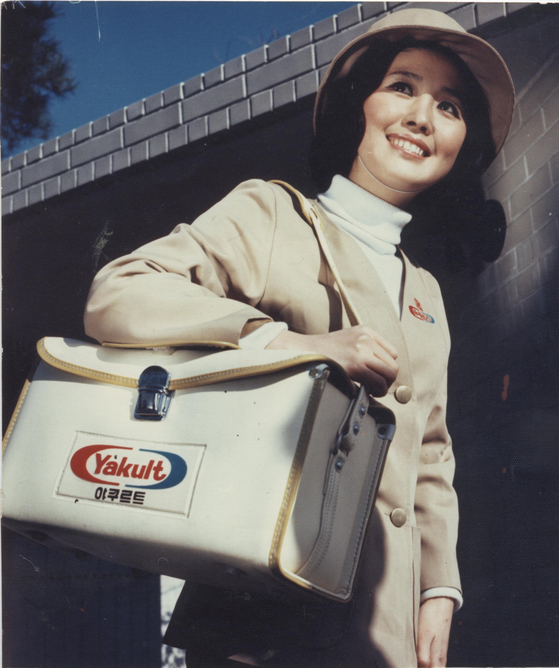
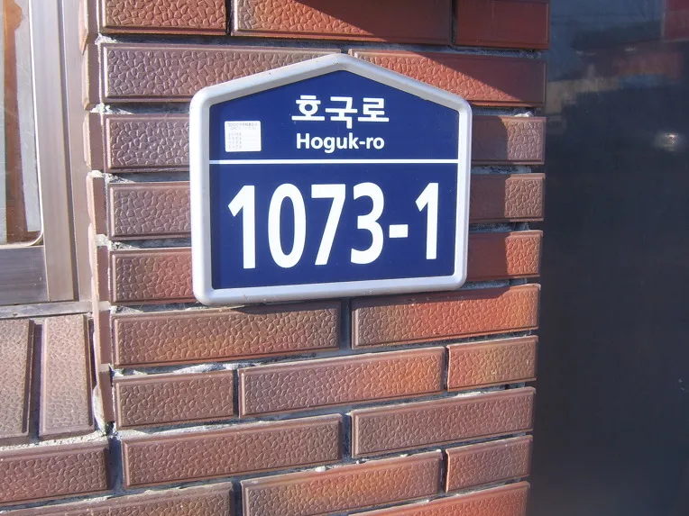
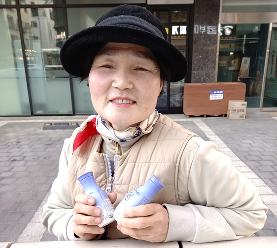
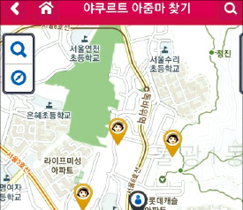

우리가 길에서 보는 야쿠르트 아줌마, 정식 명칭으로는 프레시 매니저임
겉으로 보면 동네를 돌아다니며 야쿠르트를 파는 평화로운 NPC 같지만,
실제 운영 방식은 전국 지도를 1만여 개의 구역으로 쪼개고 매니저 한 명에게 구역 하나를 전담시키는 구조임
과거 회사 모집 문구에는 아예 “철저한 자기구역제”, “할당된 구역에서는 다른 판매점과 중복 없이 오직 본인만 활동”한다고 적혀 있었음
한마디로 회사에서 봉토 하나씩 내려주고,
프레시 매니저들이 코코라는 전동 전차를 타고 자기 영지를 순찰하는 시스템인 셈임
그러므로 옆 구역에 들어가 정기고객을 꼬셔 오는 행위는 단순히 야쿠르트 한 병 더 파는 문제가 아님
정기고객은 매일 또는 매주 제품을 받는 장기 매출원이고,
담당 매니저가 오랫동안 얼굴을 익히고 배달시간과 동선을 맞춰 만든 영업 기반임
수입 역시 판매 실적과 연결되는 구조라서, 남의 구역 고객을 가져오는 것은
체감상 옆 식당에 들어가 단골손님을 통째로 납치해 오는 것과 비슷함
공식적으로 구역 침범 벌점표 같은 것은 없지만, 분쟁거리가 될 수밖에 없는 구조임

그리고 고객은 사람보다 주소를 구분되는데,
어떤 고객이 같은 구역 안에서 이사하면 기존 담당자가 계속 관리할 수 있지만,
아예 다른 담당구역으로 이사하면 주소지 이전 절차를 거쳐 새 구역의 매니저가 맡게됨
고객 입장에서는 나는 10년 동안 김 아주머니한테 윌을 샀는데?라고 해도,
시스템에선 ㄴㄴ 여기는 박 아주머니 영지라 박 아주머니 담당임 이렇게 되는거임

담당자가 그만둔다고 그 구역이 무정부 상태가 되는 것도 아님
새 매니저가 들어오기 전까지 주변 매니저들이 빈 구역을 나눠 관리하기도 하고,
신규자가 오면 고객 명단과 배달 제품, 시간대, 이동 경로 등을 다시 인계함
실제 한 신규 매니저는 담당자가 공석이었던 구역을 주변 매니저 세 명이 나눠 맡고 있어서,
세 명에게 각기 다른 인계장을 받고 루트도 세 갈래로 배웠다고 함
즉 영주가 사라지면 인근 제후들이 임시 통치하다가 신임 영주가 부임하면 영토를 반환하는 구조임
휴가 때도 나름의 규칙이 있음
하루 정도 쉬면 고객에게 미리 알리고 전날 제품을 당겨 배달할 수 있지만,
입원이나 여행으로 일주일 이상 비워야 하면
주변 매니저들이 배달 건을 나눠 맡는 ‘대배’, 즉 대신 배달을 하기도 함
이때 대신 배달한 기간의 수수료는 실제로 배달한 매니저가 가져가게됨
평소에는 국경선을 철저히 지키지만 한쪽 영주가 급작스레 쓰러지면
주변 영주들이 군사를 보내주는 야쿠르트판 집단방위조약이라고 볼수 있지 않을까
제품이 모자랄 때는 서로 빌리거나 교환하기도 함
제품마다 영업점에서 가져가야 하는 최소 수량이 있어서,
정기배송에는 한두 개만 필요한데 묶음 단위로 받아야 하는 상황이 생기기 때문임
오래 활동한 매니저들은 서로 필요한 제품을 빌리고 나중에 갚거나 교환한다고 함
국경은 못 넘지만 군수물자는 공유하는 연방국가인셈

다른 구역을 잠깐 볼일이 있어 지나가다가
우연히 행인에게 한 병 팔았다고 문제가 되는건 아니고
진짜 민감한 행위는
위에서도 언급한 남의 구역에 들어가 정기고객을 만들거나 하는 행위임

결론적으로 야쿠르트 아줌마들이 괜히 나와바리를 주장하는 게 아니라,
애초에 사업 시스템 자체가 ‘한 구역―한 담당자’로 설계되어 있기 때문에
영역 개념이 강할 수밖에 없음
코코는 단순한 전동카트가 아니라 영지 순찰차,
POS 단말기는 호적대장,
정기고객은 영지 주민,
지점장은 관찰사인셈
다만 서로 휴가 때 대배해 주고 제품도 빌려주는 것을 보면,
피 튀기는 전국시대라기보다는 국경은 정확하지만
상호방위조약이 체결된 야쿠르트 연방공화국에 가깝다고 볼수 있지 않을까?
야쿠르트 연방이라니까
동구권 국가같네 ㅋㅋㅋㅋ